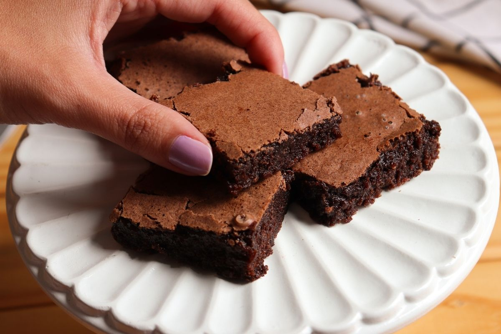

Brownie

There are many reasons why you should make a brownie.
For one, it's a delicious treat that's perfect for any occasion.
Whether you're in the mood for something sweet and indulgent
or just need a pick-me-up, a brownie can do the trick.
INGREDIENTS
- 1 cup (2 sticks) unsalted butter
- 1/2 cups granulated sugar
- 4 eggs
- 1/4 cups cocoa powde
- 1 teaspoon salt
- 1 teaspoon baking powder
- 1 teaspoon espresso powder (optional)
- 1 tablespoon vanilla extract
- 1/2 cups all-purpose flour
- 2 cups semisweet chocolate chips
INSTRUCTIONS
- Preheat the oven to 350°F. Grease a 9x13 inch baking pan.
- In a medium saucepan over low heat, melt the butter. Add the sugar and stir to combine.Heat the mixture to just warm (110-115°F)
to help dissolve the sugar, stirring occasionally.
- Transfer the sugar mixture to a large mixing bowl and add the eggs, one at a time, beating well after each addition.
- Sift the cocoa powder, salt, baking powder, and espresso powder (if using) into the bowl and stir to combine.
- Add the vanilla extract and flour to the bowl and stir until just combined. Fold in the chocolate chips.
- Pour the batter into the prepared pan and smooth the top with a spatula.
- Bake for 30-35 minutes or until a toothpick inserted in the center comes out with moist crumbs attached.
- Cool the brownies in the pan on a wire rack before cutting into squares and serving. Enjoy!
Return